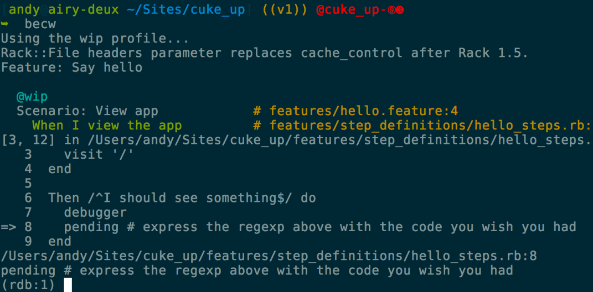
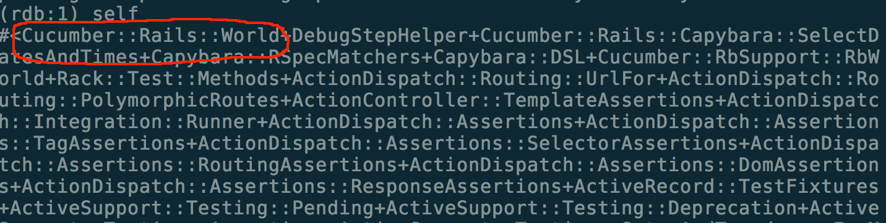
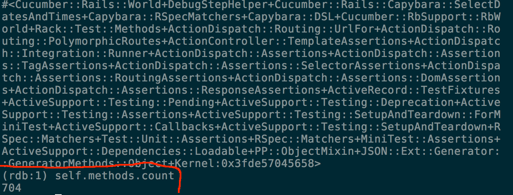

Working in a Cucumber World
Andrew Premdas
- Early adopter of Cucumber (late 2008)
- Joint moderator of Cucumber mailing list
I work for

First conference presentation
- go easy on me
Supporting application at Github
Mechanics of talk
- will use various stopping points in repository to prompt discussion about the Cucumber world
Cucumber World (V1)
Here we have a basic Rails app ready to go with Cucumber. In addition we have the debugger gem installed, some debug steps and a little utility I use to 'peek' at views.

We are stopped in a step definition

Here is our world

Our world has lots of methods
- these make cucumber work
Why World?
a World in which
- application behaviour can be described
- things can be run
- tools can be created
In our World
Define and follow conventions to ...
- Simplify
- Configure
We can establish a vocabulary/dictionary. This will be very influential on the code we create
Our World can become
- a
mapof our application'sterritory - a facilitator to create new functionality and new territory
Make it simple
Once the concept of a world is central then everything you do with Cucumber should make your world a better place.
Make it eloquent
Making your world a better place allows you to make your application a better place
and now a quick aside
Communicating between steps
There are 3 main ways to do this
Use a variable
- easy and dangerous. Variables can vary, global variables can vary anywhere. If you have to many of them it is very easy to get into a terrible mess.
Look for the only/last instance
- simple, but starts to get messy when you deal with multiple instances
Name the instance, and then lookup the instance using the name
- most flexible, but makes scenarios more verbose. Every step in the scenario has to contain the name
It turns out there are a few occasions where we can use global variables effectively.
These occur when the things we are capturing:
- don't vary
- fit as being global in our world
The perfect candidate for this are people
Populating our world
Remembering to
- simplify
- establish conventions
We will say the following:
people have unique first names
the variable for a person is their first name - e.g. William is @william
There is one more variable to consider ...
A single variable which will vary
A variable that is the most important and has the shortest name
@i
@i the most important variable
We use this all the time
Given I am an administrator
Given "I am an administrator" do
@i = create_admin
end
Given I am signed in as William
Given /^I am signed in as (\w+)$/ do |name|
@i = create_user(name)
sign_in_as @i
end
'I' is related to 'my' so
When I sign in
Then I should see my welcome
When "I sign in" do
sign_in_as @i
end
Then "I should see my welcome" do
should_see_welcome_of @i
end
so now lets look at some code (v2)
what benefits can we gain from this approach
Dealing with sad paths (v3)
- sad paths can leverage happy path code
Creating new functionality
Provide opportunity for shortcutting
- use tense to provide convention for shortcutting
Features become code
Implementing features is programming
Writing features benefits from
- natural language skills
- programming skills
Metaphors can give insight
- the
mapandterritorymetaphor
- the
Worldmetaphor